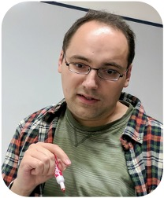
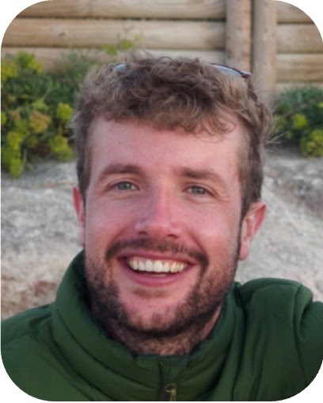
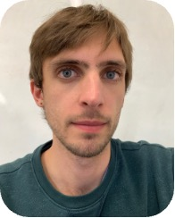
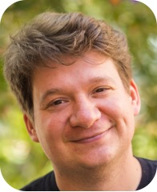
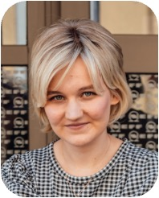

solab
☰
Home
Lab
Research
Publications
Tools
Resources
Contact
Lab
Members
Alumni
Interested in joining?

Sergey Ovchinnikov
PI
Mazdak Abulnaga
Visiting PostDoc
Yo Akiyama
EECS Graduate
Gabe Au
Bio graduate

Thomas Fryer
Joint PostDoc
Ashley Gin
BE Graduate

Tomas Lio Grudny
Joint CSB Graduate
Sarah Gurev
Joint PostDoc
Jordan Hoff
Micro Graduate
Christian Peder Jacobsen
Visiting Graduate
Julie Maria Johansen
Visiting Graduate
Aiden Kolodziej
Bio graduate

Simon Kozlov
Fellow
Kelvin Lartey
Visiting Undergraduate
Xiaonan Liu
Harvard Graduate
Chenxi Ou
Bio graduate
Jeffrey Ouyang-Zhang
PostDoc
James Roney
CSB Graduate
Marielle Russo
Micro Graduate
Olivia Tang
Undergraduate
Zhidian Zhang
PostDoc
Martha Pham
Admin Assistant
Poe
Citizen Scientist
Virtual Members
Garyk Brixi
Undergraduate (now graduate student at Stanford)

Anna Mikulevica
Undergraduate (Now at Yale)